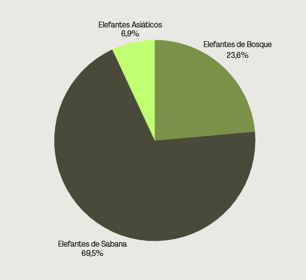
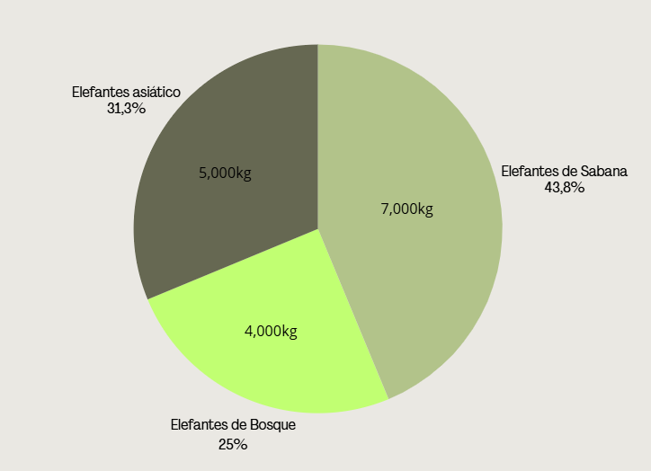
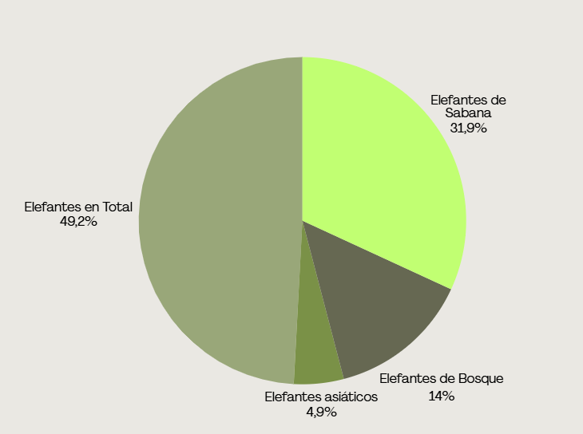

Hoy en día, la mayor amenaza para los elefantes africanos son los delitos contra la vida silvestre, principalmente la caza furtiva destinada al comercio ilegal de marfil, mientras que el mayor peligro para los elefantes asiáticos es la pérdida de hábitats, que además provoca conflictos entre las comunidades locales y estos animales.
Actualmente existen tres especies de elefante, las tres están protegidas e incluidas en la Lista Roja de la UICN; la primera “en peligro crítico de extinción” y las dos restantes “en peligro”. Los datos son realmente preocupantes: en solo 30 años ha desaparecido el 90 % de los elefantes de bosque, en el último medio siglo han desaparecido el 60% de los de sabana y ya quedan menos de 40.000 elefantes asiáticos, entre los que se encuentran los últimos 1.000 elefantes de Borneo, catalogados “en peligro” desde este año a causa de la deforestación, el furtivismo de marfil y los conflictos con las comunidades locales.

Los elefantes tienen pesos muy distintos según la especie: los asiáticos rondan las 5 toneladas, los de bosque africano entre 2 y 4 toneladas, y los de sabana africana son los más grandes, alcanzando hasta 7 toneladas.
El peso depende del sexo y la edad, pues los machos adultos son mucho más pesados que las hembras. Los hábitats influyen ya que los de bosque son más pequeños porque necesitan desplazarse entre árboles densos, mientras que los de sabana tienen espacio abierto para crecer más. En promedio, los elefantes africanos son más grandes que los asiáticos, tanto en peso como en altura.

Más del 90% de la población histórica de elefantes africanos ha desaparecido en el último siglo. La caza furtiva por el marfil y la pérdida de hábitat debido a la expansión humana son los principales factores que impulsan a las tres especies hacia su extinción.
La gran mayoría de especies de elefantes y sus parientes (mamuts, mastodontes, elefantes enanos insulares) desaparecieron en los últimos 10,000 años. Actualmente solo quedan tres especies vivas, todas bajo amenaza directa por caza furtiva y pérdida de hábitat, los mayores riesgos son la caza furtiva de marfil, deforestación, agricultura y el cambio climático. Los elefantes que sobreviven hoy representan apenas una fracción mínima de su diversidad original y están en peligro de desaparecer si no se refuerzan las medidas de conservación.
